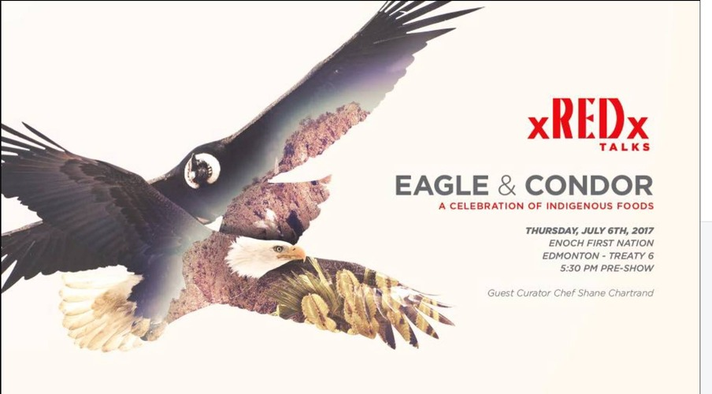

Location: Enoch Cree Nation Role: Behind-the-Scenes Videography & Event Support Focus: Participant-centered storytelling, reconciliation through food Overview In 2017, I worked behind the scenes at the Redxtalks Eagle and Condor culinary event, hosted at Enoch Cree Nation. The gathering brought together eight chefs from diverse cultural backgrounds to cook Indigenous foods from their respective traditions. The event emphasized reconciliation, inclusivity, and ceremony through shared food experiences.
The event received national media coverage, including a CBC feature highlighting the chefs and keynote speakers. My Role Captured behind-the-scenes footage of participants and guests Documented the atmosphere and interactions throughout the event Made intentional editorial choices about who to center in the storytelling Assisted with event logistics, including managing parking Adapted between creative and operational responsibilities as needed Intentional Storytelling Approach Because the chefs and host were already receiving substantial media coverage, I made a conscious decision to focus my documentation on: Guests and participants The fire pits and shared cooking spaces
Community interactions The lived experience of the gathering Both the chef and host had expressed that news coverage had already centered them. My goal was to capture what wasn’t being shown — the people attending, learning, connecting, and sharing food together. Impact Preserved the event from a community perspective rather than a headline perspective Captured the human atmosphere beyond formal media narratives Demonstrated adaptability by supporting both creative documentation and event logistics
Reflection This experience reinforced my belief that storytelling is a responsibility. Choosing where to point the camera shapes whose experience becomes visible. By focusing on participants rather than personalities, I aimed to document the spirit of the event rather than replicate mainstream coverage.
Short Card Version Redxtalks Eagle and Condor (2017) Behind-the-scenes videography centering participants and community at a nationally covered Indigenous culinary event.
